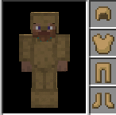

Each new armor set shares the same recipe pattern as the normal armors in Minecraft. Additionally, villagers have a chance of offering pieces of the mod armor for trade and the mod armor pieces can be repaired in the vanilla Minecraft Anvil using the same material used to craft that armor piece.
Optionally, wood and/or stone armors can apply an enchantment that will slow the player when worn. The amount the player is slowed is determined by the type and number of wood or stone armor pieces being worn. This feature is disabled by default, but can be enabled via the config options.
Armors are registered with and can be repaired by the Mr Crayfish Furniture Mod's Washing Machine if said mod is installed (http://www.mrcrayfish.com/furniture.php).
